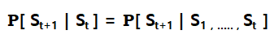
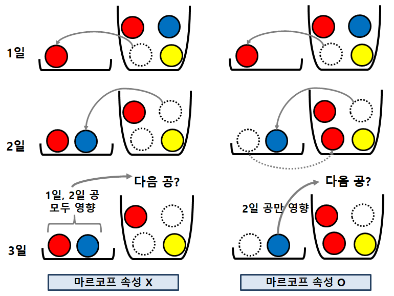
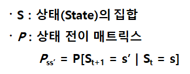
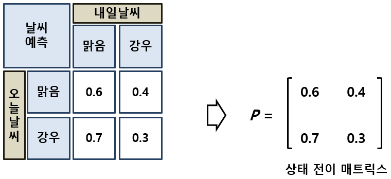
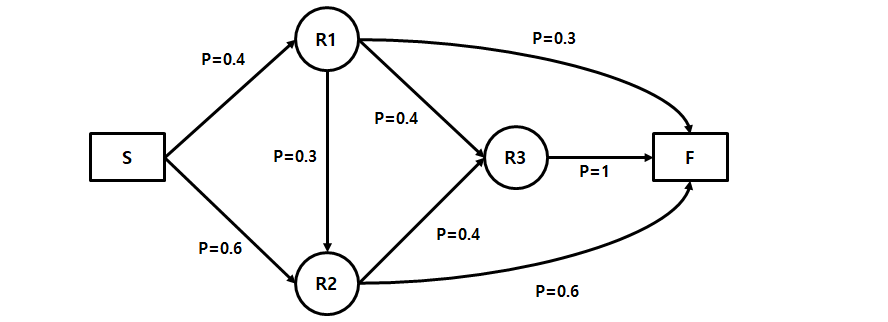
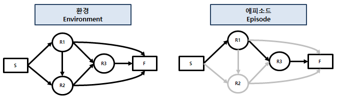

[강화학습 기초 2-2] 마르코프 연쇄: 지금만 보고 다음을 예측한다
마르코프 속성과 마르코프 연쇄를 날씨 예측과 길 찾기 예시로 계산해 봅니다.
강화학습 기초 시리즈 · 12편 중 3번째 글
연재 목차 보기
대표가 쓴 『개발자답게 코드로 익히는 강화학습』(프리렉, 2025)의 내용을 블로그에 맞게 정리해 연재합니다.
마르코프 속성
마르코프 속성(Markov Property)은 러시아 수학자 안드레이 마르코프의 이름을 딴 개념으로, 확률과정의 특별한 형태입니다. 핵심은 과거를 기억하지 않는다는 것입니다. 과거에 일어난 일은 무시하고 현재 상태만 보고 미래를 예측합니다.
왜 과거를 무시할까요? 문제를 단순하게 만들기 위해서입니다. 과거의 모든 상황까지 고려하면 따져야 할 데이터가 감당할 수 없을 만큼 많아집니다. 미래에 가장 큰 영향을 주는 현재만 보면 문제가 훨씬 쉬워집니다.
마르코프 속성을 조건부 확률로 쓰면 다음과 같습니다.

시간 t의 상태가 St일 때, 다음 시간 t+1의 상태 St+1은 그 이전 상태들(S1 … St-1)과 상관없이 St만으로 정해진다는 뜻입니다.

자루에 빨간 공 2개, 파란 공 1개, 노란 공 1개가 들어 있다고 해 봅시다.
- 마르코프 속성을 만족하지 않는 경우: 오늘 꺼낸 공과 내일 꺼낸 공을 모두 따로 보관하면, 셋째 날 나올 공은 오늘과 내일 꺼낸 공 모두의 영향을 받습니다.
- 마르코프 속성을 만족하는 경우: 내일 공을 꺼낸 뒤 오늘 꺼낸 공을 자루에 다시 넣으면, 셋째 날 나올 공은 바로 전날 꺼낸 공의 영향만 받습니다.
마르코프 연쇄
마르코프 연쇄(Markov Chain)는 마르코프 속성을 가진 시스템이 시간에 따라 상태를 바꿔 가는 모습을 나타냅니다. 미래 상태의 확률이 과거와 상관없이 현재 상태로만 정해지는 환경입니다. 상태가 이산적(discrete)이면 마르코프 연쇄, 연속적(continuous)이면 마르코프 프로세스(Markov Process)라고 부릅니다.
여기서 잠깐 · 이산적과 연속적
이산적이라는 말은 따로따로 떨어져 있다는 뜻이고, 연속적이라는 말은 끊김 없이 이어져 있다는 뜻입니다. 1, 2, 3 같은 정수는 서로 떨어져 있으니 이산적이고, 1.0000001과 1.0000002 사이에도 끝없이 숫자가 있는 실수는 연속적입니다.
마르코프 연쇄는 두 가지로 이루어집니다. 상태 집합(S)과 상태 전이 행렬(P)입니다. 상태 전이 행렬은 한 상태에서 다른 상태로 바뀔 확률을 행렬(매트릭스) 형태로 모아 놓은 것입니다.

예시: 날씨 예측
이해를 돕기 위해 상황을 단순하게 만들어 보겠습니다. 날씨는 맑음과 비 두 가지뿐이고, 과거 데이터를 분석해서 오늘 날씨에 따른 내일 날씨의 확률을 구해 두었다고 합시다.

- 오늘 맑음 → 내일 맑음: 0.6
- 오늘 맑음 → 내일 비: 0.4
- 오늘 비 → 내일 맑음: 0.7
- 오늘 비 → 내일 비: 0.3
이 네 가지 확률을 행렬로 묶은 것이 상태 전이 행렬입니다. 각 행의 합은 항상 1입니다. 오늘 날씨가 정해지면 내일은 둘 중 하나가 반드시 나오기 때문입니다.
그럼 오늘 맑을 때 3일 뒤 날씨는 어떨까요? 마르코프 연쇄에서는 과거를 볼 필요가 없으니, 상태 전이 행렬을 세 번 곱하면 됩니다.
| 계산 | 맑음 → 맑음 | 맑음 → 비 | 비 → 맑음 | 비 → 비 |
|---|---|---|---|---|
| 1일 뒤 (P) | 0.6 | 0.4 | 0.7 | 0.3 |
| 2일 뒤 (P × P) | 0.64 | 0.36 | 0.63 | 0.37 |
| 3일 뒤 (P × P × P) | 0.636 | 0.364 | 0.637 | 0.363 |
예를 들어 2일 뒤 "맑음 → 맑음"은 (맑음→맑음→맑음) 0.6×0.6 + (맑음→비→맑음) 0.4×0.7 = 0.36 + 0.28 = 0.64입니다. 같은 방식으로 한 번 더 곱하면, 오늘 맑을 때 3일 뒤에도 맑을 확률은 0.636, 비가 올 확률은 0.364입니다. 단순한 행렬 곱셈으로 미래를 그럴듯하게 예측할 수 있습니다.
흥미로운 점은 3일 뒤가 되면 오늘 맑았든(0.636) 비가 왔든(0.637) 맑을 확률이 거의 같아진다는 것입니다. 시간이 지날수록 오늘 날씨의 영향이 옅어지기 때문입니다.
예시: 길 찾기 네트워크
이번에는 네트워크 형태로 표현된 환경을 보겠습니다. 출발점(S)에서 라우터(R1, R2, R3)를 거쳐 도착점(F)까지 가는 구성입니다. 화살표는 갈 수 있는 방향이고, 각 화살표에는 확률이 붙어 있습니다.

S에서는 R1(0.4)이나 R2(0.6)로 갈 수 있고, 두 확률을 더하면 1입니다. 같은 내용을 행렬로도 쓸 수 있습니다.
| 현재 \ 다음 | S | R1 | R2 | R3 | F |
|---|---|---|---|---|---|
| S | 0 | 0.4 | 0.6 | 0 | 0 |
| R1 | 0 | 0 | 0.3 | 0.4 | 0.3 |
| R2 | 0 | 0 | 0 | 0.4 | 0.6 |
| R3 | 0 | 0 | 0 | 0 | 1 |
| F | 0 | 0 | 0 | 0 | 0 |
네트워크로 쓸지 행렬로 쓸지는 풀고 싶은 문제에 따라 고르면 됩니다.
한 번에 화살표 하나씩 움직인다고 할 때, 정확히 3번 움직여서 S에서 F에 도착할 확률을 구해 봅시다. 한 번 움직이는 단위를 타임스텝(Time Step)이라고 부릅니다.
3 타임스텝 만에 도착하는 길은 세 가지입니다. 이처럼 상태가 이어지는 하나의 흐름을 에피소드(Episode)라고 합니다. 각 길은 조건부 확률이 연달아 일어나야 하므로 확률을 곱하고, 마지막에 세 길의 확률을 더합니다.
| 에피소드 | 계산 | 확률 |
|---|---|---|
| S → R1 → R3 → F | 0.4 × 0.4 × 1 | 0.160 |
| S → R1 → R2 → F | 0.4 × 0.3 × 0.6 | 0.072 |
| S → R2 → R3 → F | 0.6 × 0.4 × 1 | 0.240 |
| 3 타임스텝에 도착할 확률 (합계) | 0.472 | |

왼쪽 그림처럼 갈 수 있는 길 전체가 환경이고, 오른쪽처럼 실제로 지나간 길 하나가 에피소드입니다. 마르코프 연쇄를 쓰는 목적은 이렇게 풀고 싶은 일이 일어날 확률을 구하는 것입니다.
어디에 쓰일까
마르코프 연쇄는 실제로 많이 쓰입니다. 야구 통계에서는 아웃카운트와 주자 위치를 상태로 보고, 상태가 바뀌는 확률로 앞으로 낼 수 있는 점수를 계산합니다. 영화 「머니볼」로 널리 알려진 데이터 야구도 이런 통계 분석을 바탕으로 합니다. 경기에 내보낼 선수를 고르거나, 3년 뒤 매출을 예측해 판매 전략을 세우는 일에도 같은 생각을 쓸 수 있습니다.
정리
- 마르코프 속성: 다음 상태는 현재 상태만으로 정해집니다.
- 마르코프 연쇄 = 상태 집합(S) + 상태 전이 행렬(P)
- 행렬을 여러 번 곱하면 몇 단계 뒤의 확률을, 경로별 확률을 곱하고 더하면 에피소드의 확률을 구할 수 있습니다.
다음 편에서는 여기에 보상을 더해, 상태가 얼마나 가치 있는지 계산하는 마르코프 보상 과정을 살펴봅니다.